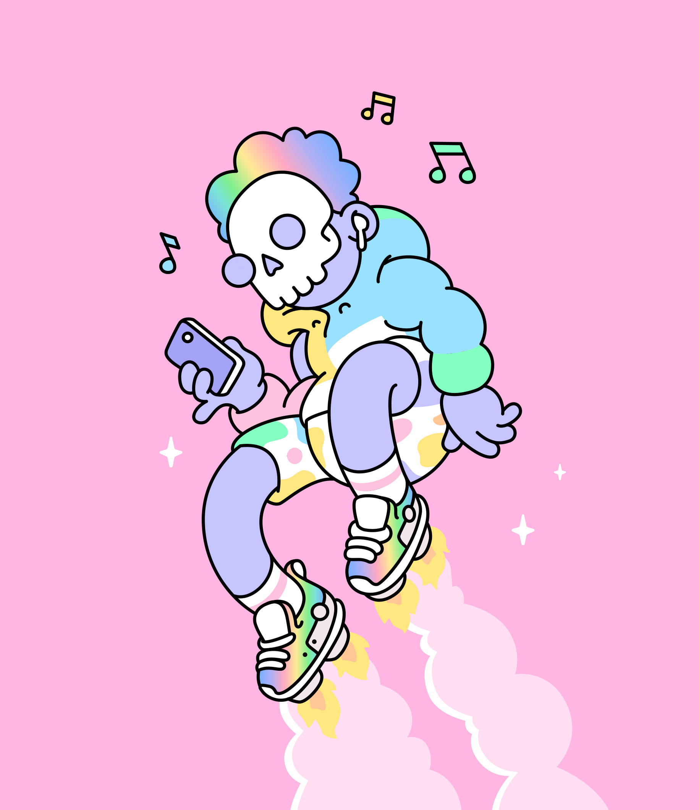
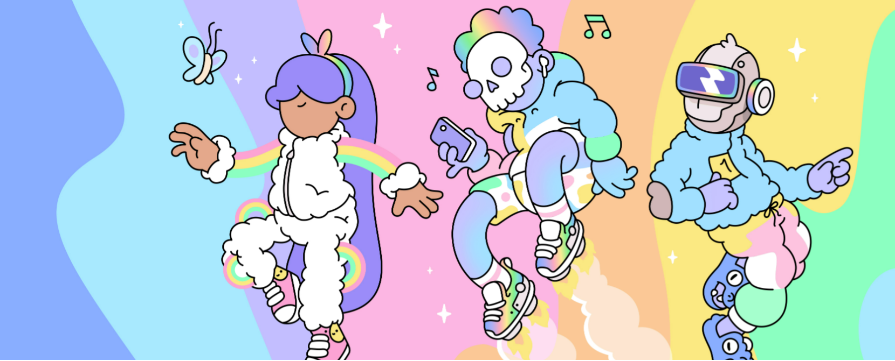

Doodles 2 lets anyone create a uniquely
personalized and endlessly customizable character in the one-of-a-kind style from artist Burnt
Toast.
Doodles 2 characters can have their appearances updated and saved to the blockchain with no
transaction fees. They will incorporate music from the biggest artists that can be unlocked and
utilized. Characters and Wearables from Doodles 2 can easily be bought, traded, or sold.
Why Flow blockchain
The Flow blockchain is a highly scalable
blockchain platform that provides a secure and user-friendly environment for the storage and
transfer of digital assets. Flow is built with a focus on scalability, so it can process
transactions quickly and securely, making it ideal for NFTs. It also provides an easy-to-use
developer platform, so digital artists can easily create and sell their artwork as NFTs.

On-chain scalability is a requirement for
Doodles 2.
Everything you see below is on-chain—the Wearables art, the attributes, the Doodle and its
customization.
Mainstream users will endlessly customize their doodles and trade wearables without transaction
fees.
The programming language makes Doodles 2
customization meaningful on-chain.
Customization adds or removes Wearables in
your Doodle’s possession.
This means Doodle is actually wearing its
Wearables on-chain.
# Minters
1554
# Minted NFT
24,974
As you know, doodle is one of the very successful NFT projects that has decided to expand a part of its ecosystem in the past and has done this expansion in the ecosystem in Blockchain Flow. Now you ask what expansion?
doodle decided to whitelist NFTs on Flow Blockchain for its users. These NFTs are wearable for original NFTs and users can make changes on their original NFTs by purchasing them. This led to the expansion of the doodle ecosystem. In addition, this expansion allows users to create their own NFTs, which can be used for various purposes such as trading, making payments, and many more. Furthermore, these new NFTs can be used as a form of collateral for various projects and services. With the whitelisting of NFTs on Flow Blockchain, doodle has opened up new opportunities for its users and the ecosystem.
* Number of Toekns based on position
* Number of Toekns based on Color
* Number of Toekns based on Template
As we can see, 1554 wallet addresses have minted nearly 24970 NFTs so far. These NFTs have different features.
Features such as color, template and different positions. Now let's check which one of these features was more popular and more NFTs have that feature.
As you can see, 8320 NFTs were related to feet and the most used and popular color was white.

As we know, after the process of minting NFTs, their buying and selling market also prospers. Therefore, we want to examine the purchase and sale of NFTs in Blockchain Flow
* Number of Sale Transactions
As we can see, the number of transactions was the highest number of transactions per day on January 31, 2023, and then it decreased rapidly. But the number of transactions quickly reached nearly 350 on February 7, 8, and 9. But then it followed a downward trend again.
The following charts show other parameters related to the purchase and sale of this set of NFTs on Blockchain Flow. Parameters such as creator fee, the number of buyers and sellers, the volume of buying and selling in dollars and the average of the highest and lowest volume of buying and selling on a daily basis in dollars
* Total Creator Fee Volume in $
* Number of Buyers (Green) and sellers(Blue)
* Total Sale Volume in $
* Max - Avg - Min Sale Volume in $
As we have seen in the graphs, the number of buyers and the number of sellers have also decreased after the month of January, which was related to the launch of this NFT project. However, on February 9, the number of sellers reached an unprecedented record. Also, on February 1, nearly $6,000 in revenue was collected through these transactions for the doodle project
Also, by looking at the volume of buying and selling on February 1, we realize that nearly 117 thousand dollars were bought and sold, but in recent days this volume of buying and selling has reached less than 500 dollars, which shows a significant decrease.
* Top marketplaces
The above graph shows the number of transactions, the volume of transactions, the number of buyers and the number of sellers for this NFT collection in different marketplaces. According to this chart, we can see the share of buying and selling of each Place Market. As we can see, Market Place Store Front has the largest share of this buying and selling, which is equivalent to 97%.
* Floor Price over time (in Flow)
As we can see in the chart above, the floor price of this nft collection has changed a lot over time. So that in the middle of February, it reached its maximum value, that is, nearly 178 Flow tokens. But after that, the floor price has decreased until it has reached less than 40 Flow tokens in recent days.
* List of Top Buyers (Volume $)
* List of Top Sellers (Volume $)
* List of Top Buyers (count)
* List of Top Sellers (count)
In the four charts above, you can see the top buyers and sellers in terms of the number of transactions and the volume of transactions. These wallet addresses are actors who have a very important role in this ecosystem and its growth and fall, so knowing these wallet addresses can help a lot.
Conclusion:
As we have seen in this article, a short review was done about this collection and the number of purchases and sales, buyers and sellers, volume of purchases and sales. The number of mints and the addresses that minted, famous market polices, top buyers and sellers were checked in terms of the number of transactions and the volume of transactions.
In recent days, when the price of nfts of this collection on the Ethereum blockchain has faced a sharp price reduction, checking this collection on the Flow blockchain can be useful and help this ecosystem a lot.